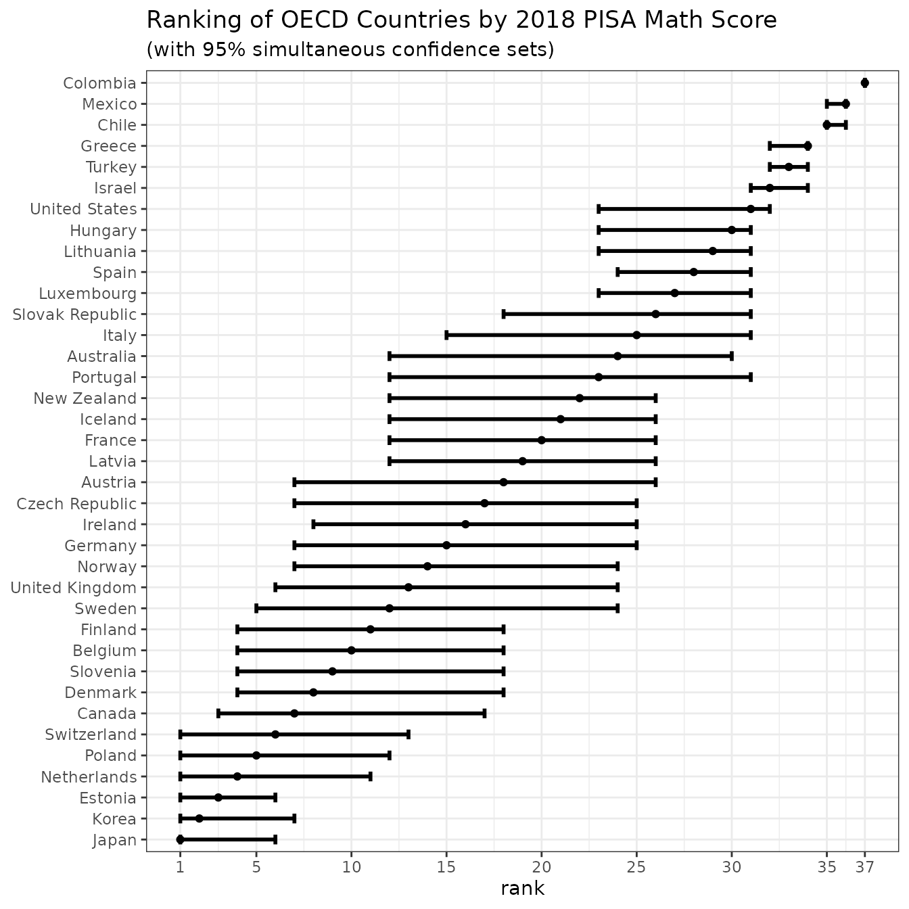

Suppose, that you would like to learn about quality of education across different countries. You could come up with a test, conduct it in different countries, and calculate mean results (say, percentages of correct answers). However, you are not interested in the mean results themselves, but in ranking countries according to the quality of offered education. You want to answer questions like:
Observe, that none of those questions is about the absolute values of test results, but about the order of them.
Now, because the tests were not distributed to every single pupil in every country, but to randomly selected sample of pupils, the obtained mean result is not the mean result of the whole country. There is uncertainty connected with those results (usually in a form of standard deviation). Now, this uncertainty may influence the positions of countries in the ranking. For example, if the first place is tightly contested, the actual best country might not be the country with highest mean obtained result, but the one with the second, third, fourth…
Naturally, this is a problem, that occurs not only when ranking countries’ education systems according to test results, but when ranking any populations (could be counties in the USA, universities in Germany or political parties in Australia) according to any feature of interest (like social mobility, staff-to-student ratio, or public support).
csranks is an R-package that addresses uncertainty of
estimates of features used to rank populations. It does so by returning
not single ranks, but confidence sets of ranks. Those
confidence sets come in three kinds:
We return to ranking countries by quality of their education systems,
according to performance in a given test. PISA study does exactly that:
conducts the same set of tests (in mathematics, reading and natural
sciences) across countries and publishes mean results along with their
standard deviations. The simplified dataset is available in package
csranks.
First, load the package csranks. Second, load the data
and take a quick look at it:
library(csranks)
data(pisa)
head(pisa)
#> jurisdiction science_score science_se reading_score reading_se math_score
#> 1 Australia 502.9646 1.795398 502.6317 1.634343 491.3600
#> 2 Austria 489.7804 2.777395 484.3926 2.697472 498.9423
#> 3 Belgium 498.7731 2.229240 492.8644 2.321973 508.0703
#> 4 Canada 517.9977 2.153651 520.0855 1.799716 512.0169
#> 5 Chile 443.5826 2.415280 452.2726 2.643766 417.4066
#> 6 Colombia 413.3230 3.052402 412.2951 3.251344 390.9323
#> math_se
#> 1 1.939833
#> 2 2.970999
#> 3 2.262662
#> 4 2.357476
#> 5 2.415888
#> 6 2.989559Consider ranking countries according to their students’ achievement
in mathematics. The scores in math_score are estimates of
these achievements. The countries’ ranks can be estimated using the
function irank():
math_rank <- irank(pisa$math_score)
math_rank
#> [1] 24 18 10 7 35 37 17 8 3 11 20 15 34 30 21 16 32 25 1 2 19 29 27 36 4
#> [26] 22 14 5 23 26 9 28 12 6 33 13 31csranks package is prepared to handle populations, for
whom feature values are correlated. It thus expects a covariance
matrix of estimates. In our case we assume no correlations, so the
covariance matrix is diagonal:
math_Sigma <- diag(pisa$math_se^2)First, we want to find out, which countries score highest (among top
5) in math. One can find it out using cstaubest:
CS_5best <- cstaubest(pisa$math_score, math_Sigma, tau = 5)
pisa[CS_5best, "jurisdiction"]
#> [1] Belgium Canada Denmark Estonia Finland Japan
#> [7] Korea Netherlands Poland Slovenia Sweden Switzerland
#> 37 Levels: Australia Austria Belgium Canada Chile Colombia ... United StatesWe have 12 countries among top 5 countries. That’s due to the uncertainty in the data: countries lower in estimated ranking might be among true top 5 countries after all. By construction, this set contains all countries, that are among the true top 5 (with high confidence) - which naturally means, that it contains more than 5 to not exclude a certain country among the true top 5 by mistake.
This confidence in including in the resulting set every population that should be there is called controlling the type I error in statistics. In package it’s referred to as coverage, since the resulting confidence set covers the true top 5 countries with a certain, high probability. The standard value of this probability is 95%. One can get smaller sets, if wishes to sacrifice some confidence in return.
Here is a smaller set answering the same question, but with lower confidence:
CS_5best_90 <- cstaubest(pisa$math_score, math_Sigma, tau = 5, coverage = 0.9)
pisa[CS_5best_90, "jurisdiction"]
#> [1] Belgium Canada Denmark Estonia Finland Japan
#> [7] Korea Netherlands Poland Slovenia Switzerland
#> 37 Levels: Australia Austria Belgium Canada Chile Colombia ... United StatesThe country of Sweden has been excluded; the rest remained in the set.
Now we would like to know more about a single country of interest - for example, the United Kingdom. We want to know, what’s its position in ranking according to math scores.
uk_i <- which(pisa$jurisdiction == "United Kingdom")
CS_marg <- csranks(pisa$math_score, math_Sigma, simul=FALSE, indices = uk_i)
CS_marg
#> $L
#> [1] 7
#>
#> $rank
#> [1] 13
#>
#> $U
#> [1] 23
#>
#> attr(,"class")
#> [1] "csranks"Based only on the estimates of mean test scores, we would assign the UK 13th position in the ranking. However, due to uncertainty of results, its true position could be as high as 8 and as low as 23. This weakens any inference and decisions done based on this ranking. It turns out, that the PISA score in math for the UK is not so informative.
Several governments have set national performance targets based on how well the country ranks in the league table. Incorporating the uncertainty of position in the league table could lead to a change of approach to the ranking and of policies based on it.
Finally, we would like to get a general overview of ranking of
education systems. For that, we can use a simultaneous confidence set
for ranks of all populations. This is also a good moment to present the
plot method:
CS_simul <- csranks(pisa$math_score, math_Sigma, simul=TRUE)
plot(CS_simul, popnames=pisa$jurisdiction,
title="Ranking of OECD Countries by 2018 PISA Math Score",
subtitle="(with 95% simultaneous confidence sets)")
We can draw a variety of conclusions. The confidence sets for countries at the top and bottom are tighter than for those in the middle. This means, that the countries at the top are truly at the top (there is significant difference between them and the rest), while the countries in the middle are fairly similar.
This plot also reaffirms results from previous chunks. Indeed, Sweden’s confidence set border is 5. Changing the confidence level tightened the set and one could no longer say, that Sweden might be among top 5 countries. For the 11 countries above, the sets started at at least 4th rank, so they all could possibly be among the true top 5 countries.
The confidence set for UK here is larger, than the marginal set obtained in previous chunk. This is, because the simultaneous sets must cover all true ranks for all populations of interest at once, while the marginal - only for one population. Thus, with the same level of general confidence, the marginal sets have to account for less possibilities of errors and are tighter than simultaneous ones.
This package is based on paper Mogstad, Romano, Shaikh, and Wilhelm (2023), “Inference for Ranks with Applications to Mobility across Neighborhoods and Academic Achievements across Countries”, forthcoming at Review of Economic Studies. It is available in pdf format and it’s DOI is 10.1093/restud/rdad006.
Check out the documentation of individual functions at package’s website, as well as further examples at package’s Github.